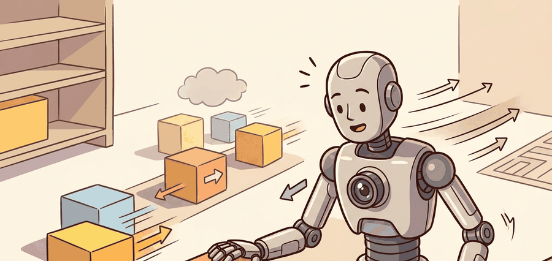

"Motion cues matter when they change what the robot should do before the next frame arrives."
A Patient Embodied AI Agent

This section assumes familiarity with the brightness constancy model introduced in section 27.1 and with the sensor timing concepts from section 8.7. The motion-cue pipeline developed here feeds directly into the affordance reasoning of section 27.5 and the collision-avoidance planner of section 30.4. Systematic failure testing of optical flow under camera shake and rolling shutter is covered in section 27.7.
A drone flying down a corridor at 8 m/s has roughly 80 milliseconds before a door frame fills its field of view. No semantic detector identifies "door frame" in that window. But the expanding optical flow pattern, that radial bloom of pixel velocities, does. Optical flow is the fastest control-relevant signal a visual system can produce, and modern embodied AI finally has the compute to run it dense, in real time, on-board. This section develops a flow pipeline, decomposes it into ego-motion and object-motion components, and wires the result to a reactive controller that brakes before slower perception ever wakes up.
Problem First: Why This Representation Exists
Optical flow is not just a visualization of motion. In embodied systems it is a short-horizon warning signal whose value depends on frame timing, ego-motion compensation, and action latency.
The contract here maps frame pairs to action timing: flow field, camera motion estimate, dynamic-object hypothesis, uncertainty, update rate, and the reactive controller that consumes it.
Flow becomes embodied knowledge when it changes braking, pursuit, gaze, manipulation timing, or collision avoidance before a slower semantic pipeline can respond.
Figure 27.4.1 should be read as a motion-cue contract: flow field, ego-motion compensation, object motion hypothesis, latency, and controller consumer determine whether motion changes the next command.
Mathematical Core
Classical optical flow starts with brightness constancy and a small-motion approximation.
$I_x u + I_y v + I_t = 0,\quad \tau \approx \frac{\theta}{\dot\theta}$
The first equation says that image intensity should stay constant as a point moves. The time-to-contact approximation uses visual expansion: when an object's angular size grows quickly, the robot may need to brake even before full 3D reconstruction is available.
Why this matters for embodied AI: Brightness constancy breaks whenever a robot arm casts a moving shadow, a warehouse light flickers, or a high-speed joint motion introduces motion blur. On a physical robot those violations are the norm, not the exception. A flow estimate computed under violated brightness constancy can report phantom obstacles or miss real ones, causing braking commands during clear corridors or missed stops before real pedestrians. The physical consequence is that brightness constancy is a calibration target: the robot's operating environment must be characterized for lighting stability, and the flow pipeline must carry a per-pixel confidence that drops when the assumption is likely violated.
How the equation is derived: Take the image intensity $I(x, y, t)$ at a pixel. If that pixel moves by $(dx, dy)$ in time $dt$, brightness constancy asserts $I(x+dx, y+dy, t+dt) = I(x, y, t)$. A first-order Taylor expansion of the left side gives $I + I_x dx + I_y dy + I_t dt = I$, which simplifies to $I_x u + I_y v + I_t = 0$ where $u = dx/dt$ and $v = dy/dt$ are the sought pixel velocities. This single equation has two unknowns, so each pixel is underdetermined. The aperture problem is solved by adding a smoothness constraint (Lucas-Kanade assumes constant flow in a local window; Horn-Schunck adds a global regularizer), trading noise tolerance against sensitivity to motion discontinuities at object boundaries.
The aperture problem is like watching a striped scarf slide past a keyhole: through the hole you can see the stripes moving, but you cannot tell whether the scarf is moving sideways, diagonally, or even along the stripe direction, because all of those motions look identical through that tiny opening. Only by widening your view to a patch of fabric that includes a corner, a button, or a contrasting edge can you pin down the true direction of travel. Lucas-Kanade does exactly that: it pools evidence from a small neighbourhood of pixels so that nearby features with different orientations vote together and resolve the ambiguity that any single pixel leaves open.
- Estimate sparse or dense flow between consecutive frames.
- Subtract expected ego-motion flow when camera motion is known.
- Cluster residual flow into moving object hypotheses.
- Convert expansion, bearing change, or residual speed into a controller-level slow, stop, or replan signal.
| Design Choice | Use When | Control Risk |
|---|---|---|
| Sparse feature flow | Visual odometry and low-compute tracking | Fails on textureless surfaces and repetitive patterns. |
| Dense learned flow | Scene motion and manipulation video | Can be expensive and may hallucinate in occlusion. |
| Residual flow | Moving obstacle detection | Bad ego-motion compensation can create false obstacles. |
Worked Miniature
Code Fragment 27.4.1 uses bounding-box size over time to estimate a simple time-to-contact cue. It is not a replacement for full flow, but it teaches the control signal hidden inside motion.
# Estimate time-to-contact from visual expansion.
# A smaller tau means the controller should slow or stop sooner.
import numpy as np
box_width_px = np.array([42.0, 48.0, 56.0, 67.0])
dt_s = 0.10
growth_rate = (box_width_px[-1] - box_width_px[-2]) / dt_s
tau_s = box_width_px[-1] / growth_rate
command = "slow" if tau_s < 1.0 else "continue"
print(round(float(tau_s), 2))
print(command)OpenCV provides Lucas-Kanade and Farneback flow, while modern PyTorch models provide learned dense flow. Those tools reduce implementation work, but the robot still needs ego-motion compensation, latency checks, and a controller policy for residual motion.
RAFT (Recurrent All-Pairs Field Transforms, Teed and Deng 2020) builds a 4D correlation volume between every pixel pair across two frames and iteratively updates the flow field with a recurrent unit. On the Sintel benchmark it achieves an average end-point error below 1.5 pixels. On a 720p frame, a mid-range GPU runs RAFT at roughly 10 fps (circa 2020-2021 hardware; 2024 mid-range GPUs reach 20-30 fps at default settings). At 100 ms latency, a mobile robot moving at 1 m/s travels 10 cm blind before the estimate is ready. The bounding-box expansion method in Code Fragment 27.4.1 returns a control hint in under 2 ms on the same hardware. RAFT costs 50 times that latency for roughly double the accuracy. This asymmetry keeps bounding-box time-to-contact useful as a parallel low-latency channel alongside heavier learned flow. The closed-loop controller consuming this signal must budget for end-to-end latency from sensor to actuator.
When running RAFT (or any learned dense-flow model) in a robotics pipeline, pass iters=12 rather than the default iters=32 during online inference: 12 recurrent update steps recovers more than 95% of full-iteration accuracy on typical robot scenes while cutting GPU time roughly in half. Also set mixed_precision=True at model construction; without it RAFT allocates a full float32 correlation volume that can exceed 2 GB on 720p frames, silently falling back to CPU on devices with less than 4 GB VRAM and making latency appear acceptable in benchmarks but catastrophic on the actual hardware.
A common assumption is that optical flow directly measures how fast objects are moving in the physical world. This is wrong: flow measures pixel displacement in the 2D image plane, not 3D velocity. A pedestrian one meter away and a pedestrian ten meters away moving at the same physical speed produce very different flow magnitudes, and a perfectly stationary wall produces large flow when the robot turns. In embodied AI the correct mental model is that flow is a 2D image-plane signal that must be combined with depth estimates, ego-motion data, and camera calibration before it can drive any metrically accurate control decision.
Do not treat every flow vector as object motion. A turning camera creates global flow, so the system must subtract expected ego-motion before labeling a pedestrian, arm, or drone as moving.
Ego-motion compensation can fail silently. The standard approach projects Inertial Measurement Unit (IMU) angular velocity into expected pixel displacement and subtracts it from the observed flow field. This works only when the IMU and camera are time-synchronized to within a few milliseconds and the intrinsic calibration is fresh. On a wheeled robot hitting a bump, IMU integration drifts for 50 to 100 ms, producing a residual flow pattern that looks exactly like a moving obstacle at the robot's heading. The system will issue a false slow or stop command with no visible error signal, because the residual is non-zero and spatially coherent. Always log raw flow, expected ego-flow, and residual separately so this failure is reproducible offline.
An indoor delivery robot can use residual flow to slow for a person stepping from behind a shelf, combining the motion cue with local obstacle avoidance for a safe stop command. The action policy should log whether the stop came from obstacle geometry, optical expansion, or a conservative fallback.
For Optical flow and motion cues, the perception result must answer what action changed, what uncertainty changed, and what log would reproduce the decision. Otherwise the output is still visualization, not embodied evidence.
Debugging And Evaluation
Evaluate motion cues with time-aligned logs: record frame pair, optical flow summary, ego-motion correction, predicted moving obstacle, chosen action, latency, and near-miss label.
Perturb frame rate, motion blur, rolling shutter, camera shake, and independently moving objects, then check whether the action changes because of motion rather than texture. Section 27.7 catalogs how perception failures become action failures when these perturbations are not tested systematically.
Long-horizon point tracking as a manipulation primitive. CoTracker3 (Karaev et al., 2024) tracks arbitrary point clouds across long video sequences with sub-pixel drift, enabling robots to maintain contact-point identity through occlusion across 30-plus frames. Physical robotics groups at CMU and ETH Zurich are exploring how persistent point tracks replace object-level bounding boxes as the control signal for dexterous in-hand manipulation, where the object pose changes continuously and a box centroid loses meaning.
Flow-guided world models for policy learning. UniSim (Yang et al., 2024, Google DeepMind) and related work use predicted optical flow as an intermediate representation inside learned world models, letting a policy simulate the visual consequence of an action before committing to it. The key finding is that a model conditioned on flow residuals generalises to novel object shapes better than one conditioned on raw RGB, because flow encodes physically plausible motion rather than appearance. Several 2025 follow-ons (including work from Freiburg's Robot Learning Lab) apply this idea to contact-rich assembly tasks where appearance varies across lighting conditions but flow patterns remain stable.
Event-camera optical flow at microsecond latency. Traditional frame-based flow has an irreducible latency floor set by the inter-frame interval. Event cameras (Dynamic Vision Sensors) fire asynchronous spikes at each pixel the moment brightness changes, enabling flow estimates with sub-millisecond latency. TUM's DSEC benchmark (Gehrig et al., 2021, updated splits 2024) and the associated E-RAFT architecture show that event-based flow can track fast drone manoeuvres at over 200 fps equivalent with 6-10x lower power than a frame camera pipeline at the same temporal resolution, making it a strong candidate for the latency-critical reactive controller slot described in this section.
Open problem for PhD research. None of the three directions above solves uncertainty-aware flow under simultaneous ego-motion and independently moving objects on power-constrained hardware. Specifically: given a mobile manipulator arm that is itself moving while a human hand enters the workspace, how should a system decompose the total flow into arm self-motion (predictable via forward kinematics), camera ego-motion (predictable via IMU), and residual intrusion flow (the signal of interest), and how should it propagate a per-pixel uncertainty through that decomposition so that the reactive controller knows when to trust a slow command? Current systems handle each component separately; a joint probabilistic formulation that remains within a 10 ms latency budget on a 30 W edge GPU does not yet exist.
Project Ideas
Beginner (weekend): Build a time-to-contact alerter using OpenCV's Lucas-Kanade sparse flow on a webcam feed: compute bounding-box expansion for a tracked object and publish a "slow" signal when tau falls below one second. The key challenge is filtering spurious expansion spikes caused by lighting changes without adding enough lag to defeat the low-latency purpose of the signal.
Intermediate (1-2 weeks): Implement an ego-motion-compensated moving-obstacle detector in a Gymnasium environment rendered with PyBullet: use the simulator's known camera pose to compute expected background flow, subtract it from RAFT dense-flow output, and cluster residuals into dynamic-object hypotheses that feed a reactive stop command. The key challenge is keeping end-to-end latency inside one control cycle (33 ms at 30 Hz) when RAFT at default iteration count already costs 80-100 ms on a mid-range GPU, requiring you to tune iteration depth and resolution without destroying accuracy on the moving-obstacle case.
Advanced (3-4 weeks): Wire a flow-based collision-avoidance policy into a LeRobot manipulation stack running in Isaac Lab: the robot arm should detect when a human hand enters its workspace via residual flow and pause mid-trajectory, then resume once the residual drops below threshold. The key challenge is separating arm self-motion flow (large, predictable, ego-motion) from hand intrusion flow (smaller, unpredictable) using forward-kinematics-projected pixel velocities rather than IMU data, which is absent for a stationary arm.
Section 27.5 extends motion-driven avoidance into intentional contact: once the robot knows what is moving and where, affordances let it decide which regions it can actually grasp, push, or step on.
Section References
OpenCV. Optical flow tutorials. https://docs.opencv.org/4.x/d4/dee/tutorial_optical_flow.html
Documents classical sparse and dense optical-flow tools used in practical robotics prototypes.
NVIDIA. Isaac ROS Visual SLAM documentation. https://nvidia-isaac-ros.github.io/repositories_and_packages/isaac_ros_visual_slam/index.html
Shows real-time visual motion estimation in a ROS 2 robotics stack.
Can you name the representation, the consuming action, the uncertainty or freshness field, and the failure label for Optical flow and motion cues? If any one is missing, the section is not yet ready for a robot replay log.
Optical flow is not just pretty arrows; it is a low-latency motion signal that must be separated into ego-motion, object motion, and control response.
Design a residual-flow test for a mobile robot turning in place while a person walks across the scene. What flow should be subtracted, and what residual should trigger slowing?